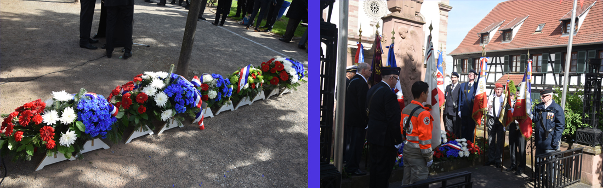

- Cet événement est terminé
Commémoration du 8 mai
8 mai à 10 h 00 min - 11 h 00 min
Navigation de l'événement

La cérémonie au monument aux morts, pour marquer la victoire du 8 mai 1945 avec la fin de la seconde guerre mondiale, aura lieu à 10 h devant le monument, rue de la République. Le rassemblement est à 9h45.
Au programme : lecture du message gouvernemental et allocution du maire Vincent Debes, avec dépôt de gerbes. La cérémonie sera ponctuée de moments musicaux proposés par les jeunes de l’Ecole municipale de musique et par la Société municipale de musique.